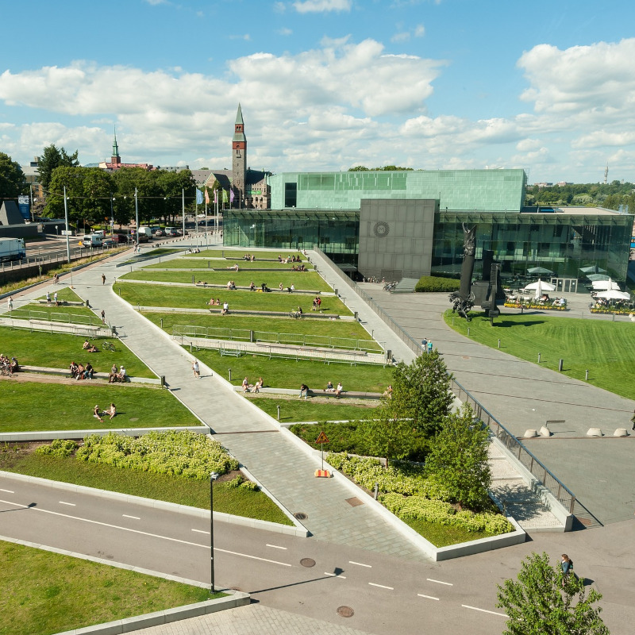

The Citizen's Square
On the Citizen's Square (Kansalaistori), you can see at one glance Finnish Parliament House, Oodi Library and Music Centre. Join the atmosphere!
Uspenski Cathedral
Uspenski Cathedral is a main cathedral of the Orthodoc Church of Finland. The cathedral was built in 1862 - 1868, and it was inaugurated on 25 October 1868. The cathedral is located at a hillside on the Katajanokka.
Fortress of Suomenlinna
Suomenlinna (or Sveaborg in Swedish]), is a sea fortress composed of eight islands, of which six have been fortified. Ferries to Suomenlinna runs up to four times per hour.